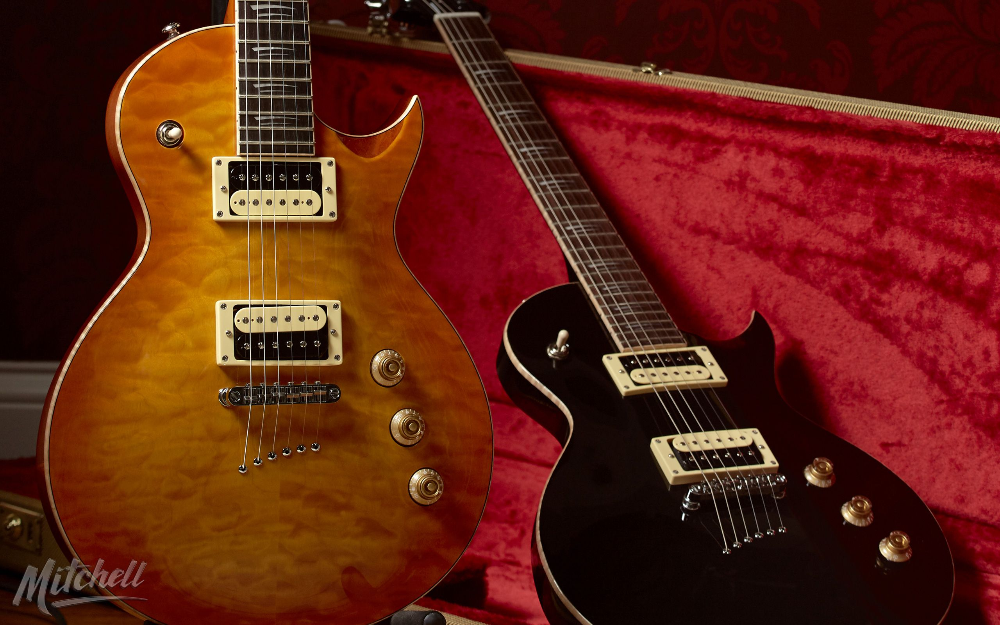

TELECASTER

Se caracteriza por la simplicidad en su diseño y por el sonido que se obtiene de sus dos pastillas de bobinado simple o single coil, que aparecen en la inmensa mayoría de sus modelos en lugar de las de bobinado doble o humbuckers que aparecieron posteriormente en otras guitarras. A lo largo de su evolución, la Telecaster sólo ha experimentado pequeños cambios en su diseño. Durante la década de los 50 afectó sobre todo a los tintes del acabado6 y a la sustitución del golpeador original de baquelita negra por otro de plástico blanco en 1954. Un nuevo modelo Custom, en 1958 incorporó también un diapasón de palisandro y aumentó de cinco hasta ocho el número de tornillos que sujetaban el golpeador. Las pastillas fueron también levemente modificadas a partir de 1954 —a pesar de que las originales tenían una excelente calidad de sonido, y son muy apreciadas por los puristas—, introduciendo unos captores de nivel variable con un sonido más agudo. A finales de los 60 se presentaron dos modelos Thinline o de cuerpo semi macizo, similar en concepto al de la Gibson ES-335. En 1972 se introdujeron los modelos Deluxe con pastillas de bobinado doble o humbuckers, y controles similares a los de una Gibson Les Paul. Clarence White, guitarrista de The Byrds, y Gene Parsons inspiraron el diseño de un mecanismo, el B-bender, que permitía subir la afinación de la segunda cuerda, acercando el timbre de la guitarra al de un lap steel, muy apropiado para el country.